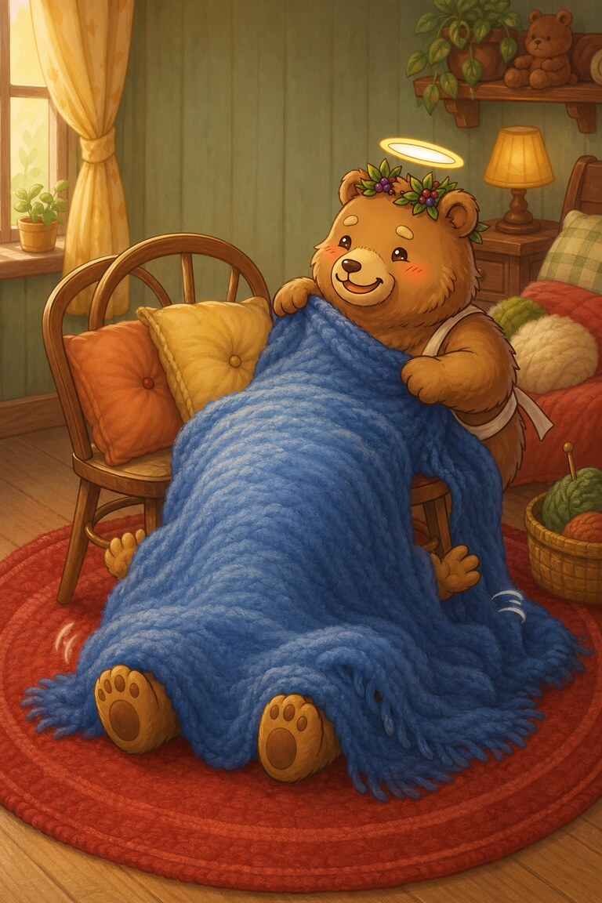
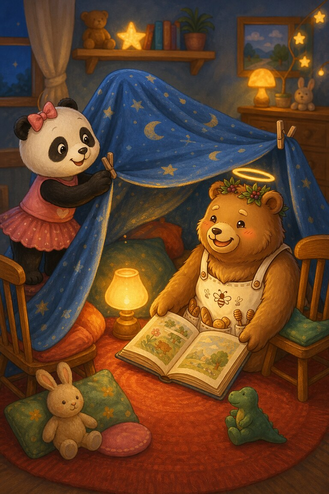
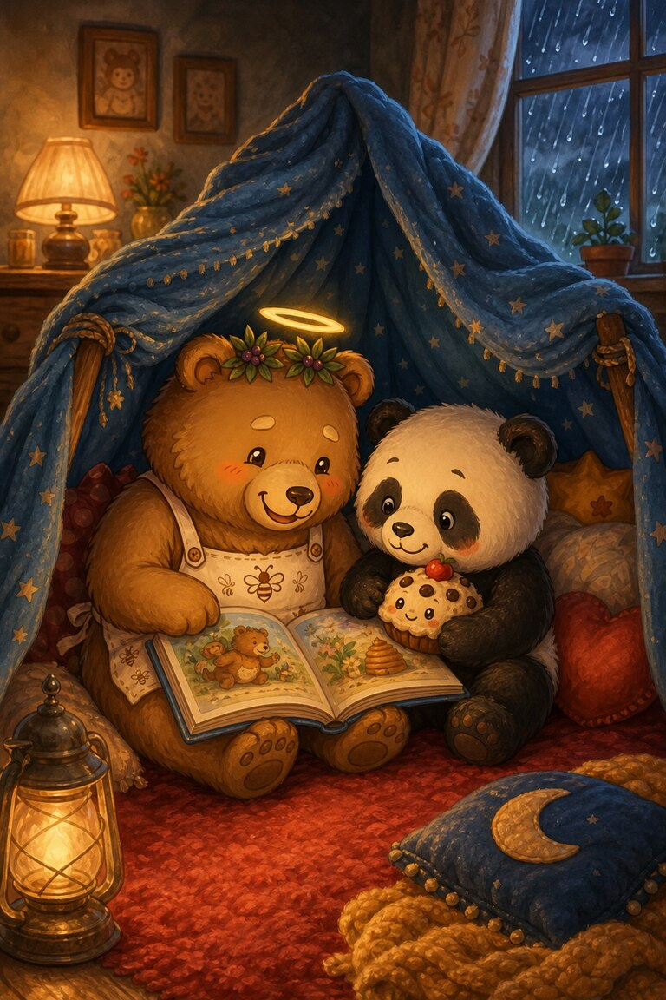

Page 1 of 4
Ted-E-Bear stacks his softest pillows between two chairs. He wants a reading fort big enough for one bear and one enormous adventure.
A four-page reading-fort story about a collapsing blanket and making room for a friend.
Ted-E-Bear stacks his softest pillows between two chairs. He wants a reading fort big enough for one bear and one enormous adventure.

He pulls a blue blanket over the top—but whoomph! It slides down and buries him in a woolly heap.

Panda-Cake holds one corner while Ted clips the other. Inside their sturdy fort, Ted switches on a lamp and opens a story they can share.

Rain whispers at the window, but the little fort is cosy and bright. Ted decides the best forts are not the biggest—they are the ones with room for a friend.
They held and clipped the blanket together. Panda-Cake held one corner while Ted clipped the other.
SnackPack Sentences & Spelling has many more short reads like this one, plus the Reading Trail, word packs and literacy games.
Next storyWise Owl’s Library Day
Know a family or class who would enjoy it?